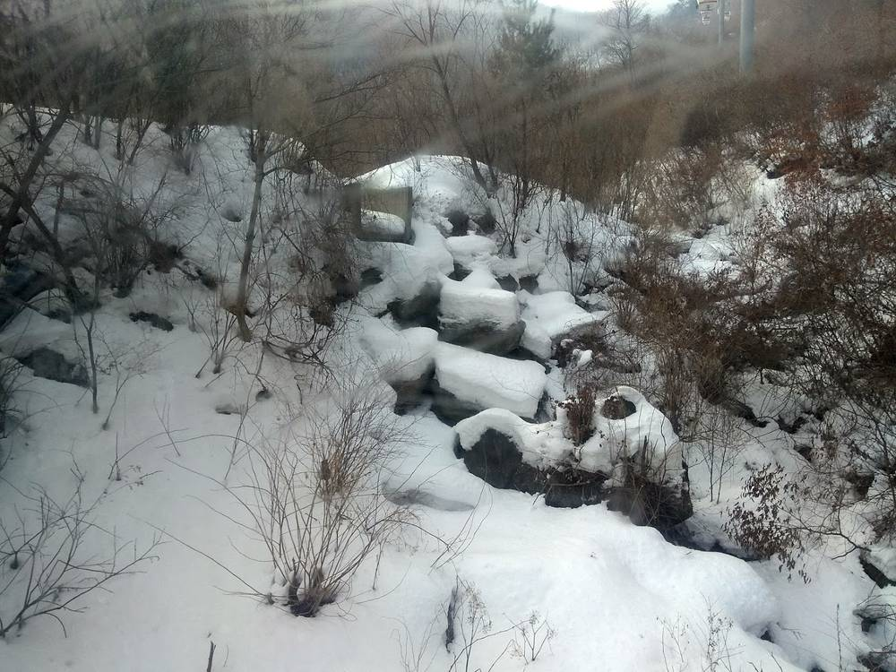

거창군, 신장수~무주영동 송전선로 후보 경과대역서 최종 제외…주민 반대대책위 25일 해산

한전 입지선정위, 덕유산·백두대간 생태축 들어 거창·함양·김천 동부권 빼기로
경남 거창군이 신장수~무주영동 송전선로 건설사업의 후보 경과대역에서 최종 제외됐다. 한국전력이 11일 무주군 드림연수원에서 연 제7차 입지선정위원회는 사업 구역 동쪽에 있는 거창군·함양군·김천시를 후보 경과대역에서 빼는 안건을 의결했다. 위원회는 덕유산 국립공원과 백두대간, 생태자연도 1등급 권역이 몰린 거창을 지나는 것은 부당하다는 주장을 받아들였다.
이 사업은 신장수변전소와 무주영동개폐소를 직선거리 약 56.7㎞로 잇는 국책사업으로, 처음에는 5개 도 8개 시·군 31개 읍·면·동이 대상지에 묶였다. 거창 북상·고제·위천면 일부가 후보지에 들자 주민들은 반대대책위원회를 꾸려 군과 함께 대응해 왔다. 북상면 송전선로 반대대책위원회는 25일 북상면 행정복지센터에서 그간 경과를 공유하고 해단식을 열 예정이다.
시민에너지 관점
한 지역이 빠지면 송전선은 다른 마을 위로 옮겨 갈 뿐이고, 남은 후보지 주민의 부담은 그대로 남는다. 독일은 풍력·태양광 발전량 1kWh당 최대 0.2센트를 주변 지자체에 나눌 수 있게 해, '누가 떠안느냐'의 싸움을 '어떻게 나누느냐'의 논의로 바꿔 왔다. 전력망이 지나는 마을이 일회성 지원금에 그치지 않고 재생에너지 사업의 지분과 수익에 함께 참여해야 경로 다툼이 끝난다. 정부와 한전은 남은 경과대역 주민에게 같은 수준의 정보와 참여 통로를 열고, 송전선로 지원금을 주민 소유 햇빛발전과 묶는 방안을 서둘러야 한다.
출처: 뉴스핌 2026-11-13 정철윤 원문 보기
居昌郡、新長水～茂朱永同送電線の候補経過帯から最終的に除外…住民の反対対策委は25日に解散
韓電の立地選定委、徳裕山・白頭大幹の生態軸を理由に居昌・咸陽・金泉の東部圏を除外
慶尚南道居昌（コチャン）郡が、新長水～茂朱永同送電線建設事業の候補経過帯から最終的に除外された。韓国電力が11日に茂朱郡のドリーム研修院で開いた第7回立地選定委員会は、事業区域の東側にある居昌郡・咸陽郡・金泉市を候補経過帯から外す案件を議決した。委員会は、徳裕山国立公園や白頭大幹、生態自然度1等級の区域が集まる居昌を通るのは不当だという主張を受け入れた。
この事業は新長水変電所と茂朱永同開閉所を直線距離約56.7kmで結ぶ国策事業で、当初は5道8市・郡の31邑・面・洞が対象地に含まれていた。居昌の北上・高梯・渭川面の一部が候補地に入ると、住民は反対対策委員会をつくり郡とともに対応してきた。北上面送電線反対対策委員会は25日、北上面行政福祉センターでこれまでの経過を共有し、解団式を開く予定だ。
市民エネルギーの視点
ある地域が外れれば送電線は別の村の上に移るだけで、残る候補地の住民の負担はそのまま残る。ドイツは風力・太陽光の発電量1kWhあたり最大0.2セントを周辺自治体に配分できるようにし、「誰が引き受けるか」の争いを「どう分け合うか」の議論に変えてきた。電力網が通る村が一回限りの支援金にとどまらず、再生可能エネルギー事業の持分と収益に参加してこそ、ルートをめぐる争いは終わる。政府と韓電は残る経過帯の住民にも同じ水準の情報と参加の窓口を開き、送電線支援金を住民所有の太陽光発電と結びつける方策を急ぐべきだ。
出典: 뉴스핌 2026-11-13 정철윤 原文を読む
居昌郡最终被排除在新长水—茂朱永同输电线路候选走廊之外…居民反对对策委25日解散
韩电选址委员会以德裕山、白头大干生态轴为由，排除居昌、咸阳、金泉东部地区
庆尚南道居昌郡最终被排除在新长水—茂朱永同输电线路建设项目的候选走廊之外。韩国电力公社11日在茂朱郡梦想研修院召开第七次选址委员会，表决通过了将项目区域东侧的居昌郡、咸阳郡和金泉市排除在候选走廊之外的议案。委员会接受了线路穿过德裕山国立公园、白头大干和生态自然度一级区域密集的居昌并不合理的主张。
该项目是以直线距离约56.7公里连接新长水变电站和茂朱永同开关站的国家项目，最初有5个道、8个市郡的31个邑面洞被划入对象地。居昌北上、高梯、渭川面部分地区被列入候选地后，居民组成反对对策委员会，与郡政府一起应对。北上面输电线路反对对策委员会计划25日在北上面行政福利中心通报此前经过，并举行解散仪式。
市民能源视角
一个地区被排除，输电线只会移到另一个村庄头上，剩下候选地居民的负担依然存在。德国允许把风电和光伏每千瓦时发电量最多0.2欧分分给周边地方政府，把“谁来承担”的争执变成了“如何分享”的讨论。电网经过的村庄不应只拿一次性补助，而应参与可再生能源项目的股份和收益，路线之争才会结束。政府和韩电应向剩余走廊的居民开放同等水平的信息和参与渠道，并尽快把输电线路补助与居民所有的太阳能发电结合起来。
来源: 뉴스핌 2026-11-13 정철윤 查看原文
Geochang finally removed from candidate corridor for Sinjangsu–Muju Yeongdong power line; residents' opposition committee to disband on 25th
KEPCO siting committee drops eastern areas of Geochang, Hamyang and Gimcheon, citing Deogyusan and Baekdudaegan ecological corridor
Geochang County in South Gyeongsang has been finally removed from the candidate corridor for the Sinjangsu–Muju Yeongdong transmission line project. The seventh siting committee meeting held by Korea Electric Power Corporation (KEPCO) on the 11th at the Dream Training Institute in Muju County voted to drop Geochang County, Hamyang County and Gimcheon City, on the eastern side of the project area, from the candidate corridor. The committee accepted the argument that running the line through Geochang, where Deogyusan National Park, the Baekdudaegan mountain range and top-grade ecological zones are concentrated, was unjustified.
The national project would link the Sinjangsu substation and the Muju Yeongdong switching station over a straight-line distance of about 56.7km, and initially covered 31 towns and districts in eight cities and counties across five provinces. When parts of Geochang's Buksang, Goje and Wicheon townships were included as candidate sites, residents formed an opposition committee and worked with the county to fight the plan. The Buksang township committee plans to share the outcome and hold a disbanding ceremony at the township welfare centre on the 25th.
Citizen Energy View
When one area is dropped, the line simply moves over another village, and the burden on residents of the remaining candidate areas stays. Germany lets wind and solar operators share up to 0.2 cents per kWh generated with neighbouring municipalities, turning fights over 'who bears it' into talks about 'how to share it'. Route disputes will end only when villages crossed by the grid take part in the equity and revenue of renewable projects rather than receiving one-off payments. The government and KEPCO should give residents of the remaining corridor the same information and channels for participation, and move quickly to link transmission line support funds with resident-owned solar.
Source: 뉴스핌 2026-11-13 정철윤 Read the original